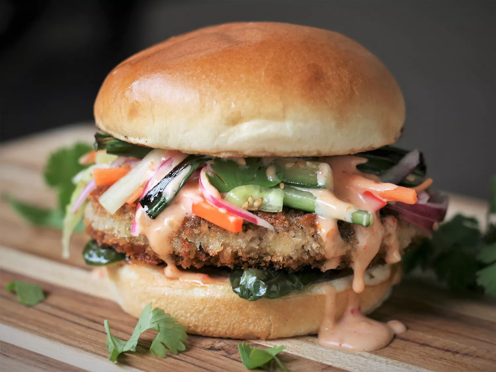

Bang Bang Blended Chicken Burger

Chicken burgers are notoriously dry,
but not anymore! Adding minced roasted
mushrooms to ground chicken not only adds
extra moisture
A little more time-intensive than a regular burger,
this version is oozing with flavor and
well worth the extra effort–crunchy, tangy, sweet,
savory and juicy, all in one burger.
Ingredients
Pickled Vegetable Slaw:
- 3/4 cup rice vinegar
- 2 tablespoons water
- 2 teaspoons white sugar
- 2 teaspoons sesame seeds
- 1 small carrot, cut into matchsticks
- 1/4 large English cucumber, cut into matchsticks
- 1/4 small red onion, cut into 1/8-inch thick wedges
Bang Bang Sauce:
- 1/2 cup mayonnaise
- 1/4 cup Thai sweet chili sauce
- 2 teaspoons Sriracha, or more to taste
- 1 teaspoon rice vinegar
- 1/8 teaspoon salt
Burgers:
- 1 (8 ounce) package crimini mushrooms, halved or quartered
- 6 tablespoons peanut oil, divided
- 1 pound ground chicken, white and dark meat
- 1 1/4 teaspoons salt
- 4 jalapeño peppers, halved and seeded
- 8 green onions, ends trimmed and onions cut in half crosswise
- 4 brioche buns, split
- 2 large eggs
- 2 tablespoons water
- 1 1/2 cups panko bread crumbs
- 2 tablespoons minced cilantro